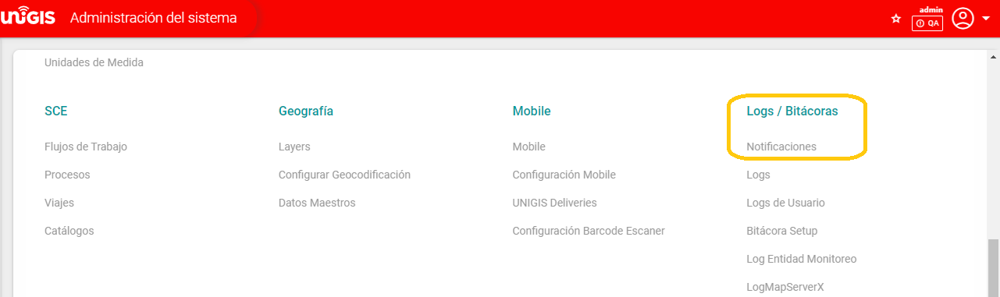
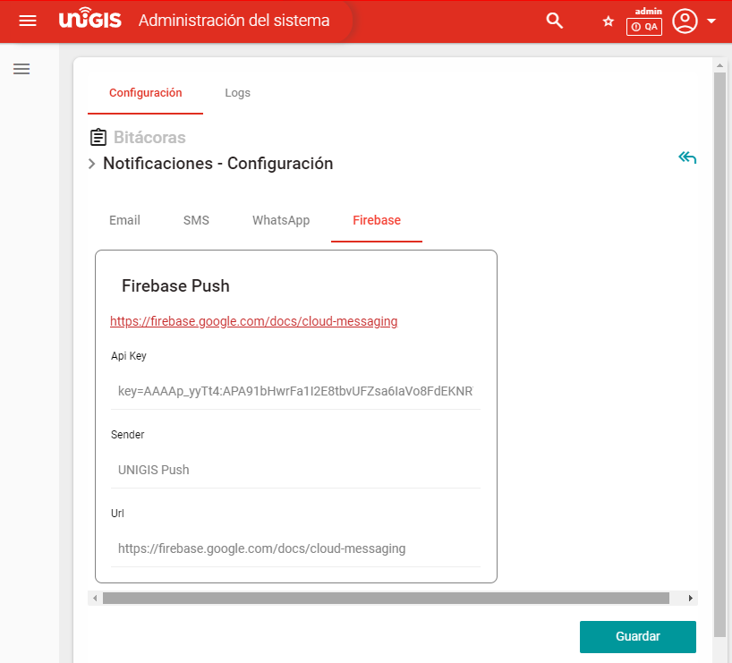
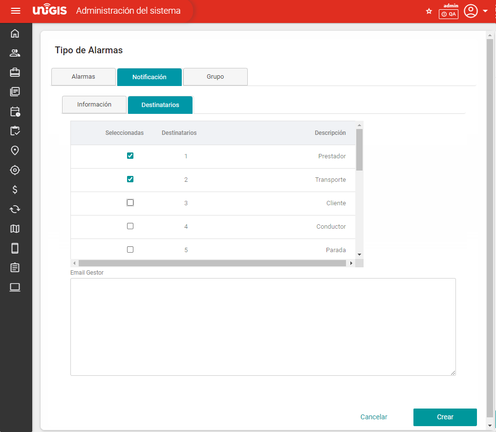

Notificaciones Push Firebase#
El presente documento explica como configurar los servicios de mensajería a través de la tecnología Firebase en el sistema UNIGIS. Parte de la mensajería está destinada a otros servicios, pero en este documento se enfocará a los servicios proporcionados por Firebase.
El objetivo es aprovechar los servicios proporcionados por el sistema de UNIGIS para notificar por medio de un mensaje a las aplicaciones móviles.
La plataforma de UNIGIS cuenta con un servicio de mensajería que es configurable a necesidad del cliente.
Las notificaciones pueden ser distribuidas o recibidas como email, mensajes de texto o mensajería de terceros.
Uno de los beneficios es que el servicio siempre está disponible para todos los usuarios que consuman los servicios de UNIGIS.
Parámetros#
En esta sección se puede editar los parámetros sin embargo se sugiere encarecidamente mantenerlos por defecto, si desea utilizar un servicio propio de Firebase en esta sección podrá modificar esos valores.
Administración del Sistema –> Integration Center –> Parámetros
Parámetro Clave |
Valor |
CategoríA |
Descripción del Parametro |
|---|---|---|---|
FirebasePush_ApiKey |
key=AAAAp_yyTt4:APA91bHwrFa1I2E8tbvUFZsa6IaVo8FdEKNR7LM82gycs-f0bHKVbhP_ZS-RcaBU8FsqVe4Stpeegt7YoLkoM9bYrHL7u1Fa_SXLkAQ9GAUVSKNSRnX1uPrQHKduVCY5m7nLWUSXSSQ4 |
FirebasePush |
ApiKey de Firebase |
FirebasePush_Sender |
721499082462 |
FirebasePush |
Numero de envío |
FirebasePush_Url |
FirebasePush |
URL Google API |
Configuración#
La sección de configuración se encuentra en:
Administración del Sistema –> Log / Bitácoras –> Notificaciones –> Notificaciones.
En la pestaña de configuración, debajo de ella encontrara los distintos tipos de notificación, seleccione Firebase para verificar si tiene los parámetros por defectos como se observa en la imagen.
Forma de Uso#
El funcionamiento de este tipo de notificaciones consiste en consumir el servicio de Firebase de envío de notificaciones. Desde las aplicaciones de UNIGIS nos comunicamos con este servicio indicando hacia dónde enviarlas.
Para ello, necesitaremos generar una petición e indicar hacia dónde deberá enviarse la notificación. Cada dispositivo receptor está identificado por un token Firebase. En nuestro sistema lo almacenamos en la tabla UsuarioTokenExterno.
Al tener instalado UNIGIS Deliveries X e ingresar en la aplicación, guardamos un registro en dicha tabla. Cuando una acción en particular genere una notificación push, se consultará el token del usuario receptor en dicha tabla para generar la petición, incluyendo el mensaje y otros datos de relevancia para el proceso.
Luego de realizar las configuraciones de las notificaciones Firebase, es necesario asignarlas. Para ello debe seleccionar un Tipo de Alarma y asociar un Tipo de Notificación. Por lo tanto, cuando debido a alguna acción especificada se gatille la creación de una alarma, si la misma tiene un Tipo de Notificación asociado, generará una Notificación de ese tipo y se enviará a los posibles destinatarios.
Ingrese a la sección de Alertas en:
Administración del sistema –> Tracking –> Alertas –> Tipo de Alarmas.
Para crear una alarma nueva, es necesario dar clic en el icono +, donde se mostrará la siguiente pantalla para que pueda configurar la Alarma a Crear.
Seleccione la pestaña de notificación y configure:
Tiempo notificable = Configurar según necesidad.
Asunto de la notificación = Título de la notificación.
Tipo de notificación:
- FirebasePushNotification:
Lanza una notificación en pantalla del dispositivo móvil informando el mensaje si tiene instalado UNIGIS Deliveries X.
La petición enviada hacia Firebase no incluye entre los datos un número de celular destino.
El token Firebase se obtiene a través de la tabla UsuarioTokenExterno utilizando el Login del conductor involucrado.
No puede ser generada a través de un tipo de alarma. Puede generarse a través de procesos que ejecuten el método GenerarNotificaciones.
- SMS Push Notificación:
Envía un SMS hacia un destino a través de UNIGIS Messenger. El usuario debe tener instalado UNIGIS Deliveries X, ya que Firebase envía una notificación push hacia esta aplicación, que se va a encargar de procesarla. Si entre los datos incluidos, se encuentra un número de teléfono destino, se enviará la notificación recibida hacia Messenger para que se encargue de enviar el SMS al destinatario.
La petición enviada hacia Firebase incluye entre los datos un número de celular destino.
Puede ser generada a través de un tipo de alarma.
El token Firebase se obtiene a través de la alarma que genera este tipo de notificación en caso de tener información de Seguimiento asociado. En caso de tenerla, obtendrá el Login del conductor asociado al viaje, para poder buscar el token en la tabla UsuarioTokenExterno.
El número de teléfono destino se obtiene de acuerdo con los destinatarios que se establezcan por configuración. En la Figura 1 mostrada en la siguiente página se indican los campos que se utilizan para obtenerlo.
ETA – : Configuraciones especiales para dar seguimiento.
ETA + : Configuraciones especiales para dar seguimiento.
Mensaje de la notificación: Si lo desea puede utilizar plantillas en formato HTML para estilizar el mensaje y customizar mapeando campos de tablas de base de datos necesarios.
Vista previa: Obtendrá la vista previa del mensaje a recibir.
Seleccione de la lista a los destinatarios a los que se le notificara por cada alarma que se genere.
Los diferentes destinatarios de notificación (Prestador, Cliente, Conductor, etc.) son entidades que permiten el manejo de notificaciones. Para obtener número de teléfono para enviar SMS o mail para enviar correo, se generará un listado de destinatarios cuyos datos de envío se obtienen de los siguientes campos dependiendo de la entidad y la alarma generada, como se muestra a continuación:
Descripción de destinatarios:
Destinatario |
Teléfono 1 |
Teléfono 2 |
|
|---|---|---|---|
Destinatario: Cliente Alarma.IdSegumiento > 0 Seguimiento.IdCliente > 0 |
Cliente.eMailGestorDeFlota |
Cliente.Telefono1 |
Cliente.Telefono2 |
Destinatario: Cliente Alarma.IdParada > 0 Parada.IdCliente > 0 |
Cliente.eMailGestorDeFlota |
Cliente.Telefono1 |
Cliente.Telefono2 |
Destinatario: Cliente Alarma.IdPedido > 0 Pedido.IdCliente > 0 |
Cliente.eMailGestorDeFlota |
Cliente.Telefono1 |
Cliente.Telefono2 |
Destinatario: Conductor Alarma.IdSeguimiento > 0 Seguimiento.IdViaje > 0 Viaje.IdConductor > 0 |
Conductor.Email |
Conductor.Telefono1 |
Conductor.Telefono2 |
Destinatario: Operación Alarma.IdSegumiento > 0 Seguimiento.IdViaje > 0 Alarma.IdOrden > 0 Alarma.IdPedido > 0 |
|
N/A |
N/A |
Destinatario: Parada o Parada Consolidada por domicilio Alarma.IdParada > 0 |
Parada.Email |
Parada.Telefono |
Parada.Telefono2 |
Destinatario: Prestador Alarma.IdEvento > 0 Evento.IdPrestador > 0 |
Prestador.Email |
|
N/A |
Destinatario: Seguimiento Alarma.IdSeguimiento > 0 |
Seguimiento.MailResponsable |
N/A |
N/A |
Destinatario: Sucursal Alarma.IdSegumiento > 0 Seguimiento.IdViaje > 0 Alarma.IdOrden > 0 Alarma.IdPedido > 0 |
|
N/A |
N/A |
Destinatario: Transporte Alarma.IdSeguimiento > 0 Seguimiento.IdTransporte > 0 |
Transporte.Email |
Transporte.Telefono1 |
Transporte.Telefono2 |
Destinatario: Usuario Alarma.IdSeguimiento > 0 Existe UsuarioSeguimiento |
Usuario.Email |
Usuario.Telefono1 |
Usuario.Telefono2 |
Destinatario: Orden Alarma.IdOrden > 0 |
Orden.Email |
Orden.Telefono |
Orden.Telefono2 |
Destinatario: Pedido Alarma.IdPedido > 0 |
Pedido,Email |
Pedido.Telefono |
Pedido.Telefono2 |
Destinatario: Parada sin visita real Alarma.IdSegumiento > 0 Seguimiento.IdViaje > 0 Todas las paradas del viaje en estado no anulado Parada.FechaInicioReal = null Parada.IdDeposito = null |
Parada.Email |
Parada.Telefono |
Parada.Telefono2 |
Destinatario: Primera Parada sin visita real Alarma.IdSegumiento > 0 Seguimiento.IdViaje > 0 Solo la primera parada del viaje en estado no anulado Parada.FechaInicioReal = null Parada.IdDeposito = null |
Parada.Email |
Parada.Telefono |
Parada.Telefono2 |
Destinatario: Usuarios Asignados Todos los grupos de usuarios relacionados a la alarma en UsuarioAlarma Todos los usuarios de los grupos obtenidos |
Usuario,Mail |
Usuario.Telefono1 |
Usuario.Telefono2 |
Destinatario: Domicilio Orden Alarma.IdParada > 0 Alarma.IdOrden > 0 |
|
|
|
Destinatario: Otros |
TipoAlarmaDestinatarioEmail.Email |
N/A |
N/A |
A los destinatarios, se le agregan como posibles destinos todas las direcciones de mail encontradas en la tabla TipoAlarmaDestinatarioEmail para el tipo de alarma con la que se esté trabajando.
Por último, accediendo la pestaña Grupo, se podrán seleccionar los grupos de usuario para los que aplique este tipo de notificación. En la imagen puede observar un ejemplo de una lista de grupos a los que puede enviar las notificaciones.
Para guardar sus cambios presione el botón Guardar. Si lo desea puede regresar a la lista de Alarmas y Editar la alarma generada anterior en caso de que requiera realizar algún cambio.